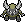

地震Earthquake
- 屬性
- 地面
- 分類
- 物理
- 威力
- 100
- 命中
- 100%
- SP
- 50
- 冷卻
- 2.2 秒（物理組）
- 範圍
- 自身周圍
- 距離
- 0 格・半徑 2.5
- 段數
- 1
- 前搖
- 1.2 秒
- 接觸
- 否
招式分類跟隨招式的 屬性 （第三世代規則，與火紅／葉綠相同）：火、水、草、電、超能力、冰、龍、惡屬性招式一律是特殊招式；其他屬性是物理招式（例外：分擔痛楚）。因此暗影球是物理招式，攀瀑是特殊招式。這是刻意設計，不是錯誤。
即時戰鬥效果
命中附近的所有目標；對挖洞中的目標威力 1.4x。
命中使用者周圍的所有敵人。
升級時學會
招式光碟
地面屬性招式光碟 ・極稀有（每打倒一隻該屬性寶可夢 0.06%，由 1 個招式分配）
可以教會 154 隻寶可夢：
 妙蛙花
妙蛙花 噴火龍
噴火龍 水箭龜
水箭龜 阿柏蛇
阿柏蛇 阿柏怪
阿柏怪 穿山鼠
穿山鼠 穿山王
穿山王 尼多后
尼多后 尼多王
尼多王 地鼠
地鼠 三地鼠
三地鼠 猴怪
猴怪 火爆猴
火爆猴 蚊香君
蚊香君 蚊香泳士
蚊香泳士 腕力
腕力 豪力
豪力 怪力
怪力 小拳石
小拳石 隆隆石
隆隆石 隆隆岩
隆隆岩 呆呆獸
呆呆獸 呆殼獸
呆殼獸 大岩蛇
大岩蛇 卡拉卡拉
卡拉卡拉 嘎啦嘎啦
嘎啦嘎啦 飛腿郎
飛腿郎 快拳郎
快拳郎 大舌頭
大舌頭 獨角犀牛
獨角犀牛 鑽角犀獸
鑽角犀獸 吉利蛋
吉利蛋 袋獸
袋獸
凱羅斯 肯泰羅暴鯉龍
肯泰羅暴鯉龍 化石翼龍
化石翼龍 卡比獸
卡比獸 快龍
快龍 超夢
超夢 夢幻
夢幻 大竺葵
大竺葵 火爆獸
火爆獸 大力鱷
大力鱷 樹才怪蚊香蛙皇
樹才怪蚊香蛙皇 烏波
烏波 沼王
沼王 呆呆王
呆呆王 麒麟奇
麒麟奇 榛果球
榛果球 佛烈托斯
佛烈托斯 土龍弟弟
土龍弟弟 天蠍
天蠍 大鋼蛇
大鋼蛇 布魯
布魯 布魯皇壺壺赫拉克羅斯
布魯皇壺壺赫拉克羅斯 熊寶寶
熊寶寶 圈圈熊
圈圈熊 熔岩蝸牛
熔岩蝸牛 小山豬
小山豬 長毛豬
長毛豬 太陽珊瑚
太陽珊瑚 巨翅飛魚
巨翅飛魚 小小象
小小象 頓甲
頓甲 驚角鹿
驚角鹿 無畏小子
無畏小子 戰舞郎
戰舞郎 大奶罐
大奶罐 幸福蛋
幸福蛋 幼基拉斯
幼基拉斯 沙基拉斯
沙基拉斯 班基拉斯
班基拉斯 洛奇亞
洛奇亞 鳳王
鳳王 蜥蜴王
蜥蜴王 火焰雞
火焰雞 沼躍魚
沼躍魚 巨沼怪
巨沼怪 過動猿
過動猿 請假王
請假王 土居忍士
土居忍士 吼爆彈
吼爆彈 爆音怪
爆音怪 幕下力士
幕下力士 鐵掌力士
鐵掌力士 朝北鼻
朝北鼻 可可多拉
可可多拉 可多拉
可多拉 波士可多拉
波士可多拉 巨牙鯊
巨牙鯊 吼吼鯨
吼吼鯨 吼鯨王
吼鯨王 呆火駝
呆火駝 噴火駝
噴火駝 大顎蟻
大顎蟻 超音波幼蟲
超音波幼蟲 沙漠蜻蜓
沙漠蜻蜓 七夕青鳥
七夕青鳥 飯匙蛇
飯匙蛇 月石
月石 太陽岩
太陽岩 泥泥鰍鯰魚王
泥泥鰍鯰魚王 天秤偶
天秤偶 念力土偶搖籃百合
念力土偶搖籃百合 太古盔甲
太古盔甲 彷徨夜靈
彷徨夜靈 熱帶龍
熱帶龍 冰鬼護
冰鬼護 海豹球
海豹球 海魔獅
海魔獅 帝牙海獅
帝牙海獅 古空棘魚
古空棘魚 暴飛龍
暴飛龍 金屬怪
金屬怪 巨金怪
巨金怪 土台龜
土台龜 烈焰猴
烈焰猴 帝王拿波
帝王拿波 頭蓋龍
頭蓋龍 戰槌龍
戰槌龍 盾甲龍
盾甲龍 護城龍海兔獸
護城龍海兔獸 銅鏡怪
銅鏡怪 青銅鐘
青銅鐘 圓陸鯊
圓陸鯊 尖牙陸鯊
尖牙陸鯊 烈咬陸鯊
烈咬陸鯊 小卡比獸
小卡比獸 利歐路
利歐路 路卡利歐
路卡利歐 沙河馬河馬獸
沙河馬河馬獸 龍王蠍
龍王蠍 不良蛙
不良蛙 毒骷蛙
毒骷蛙 小球飛魚
小球飛魚 暴雪王
暴雪王 大舌舔
大舌舔 超甲狂犀
超甲狂犀 巨蔓藤
巨蔓藤 電擊魔獸
電擊魔獸 鴨嘴炎獸
鴨嘴炎獸 天蠍王
天蠍王 象牙豬
象牙豬 艾路雷朵
艾路雷朵 大朝北鼻
大朝北鼻 黑夜魔靈
黑夜魔靈